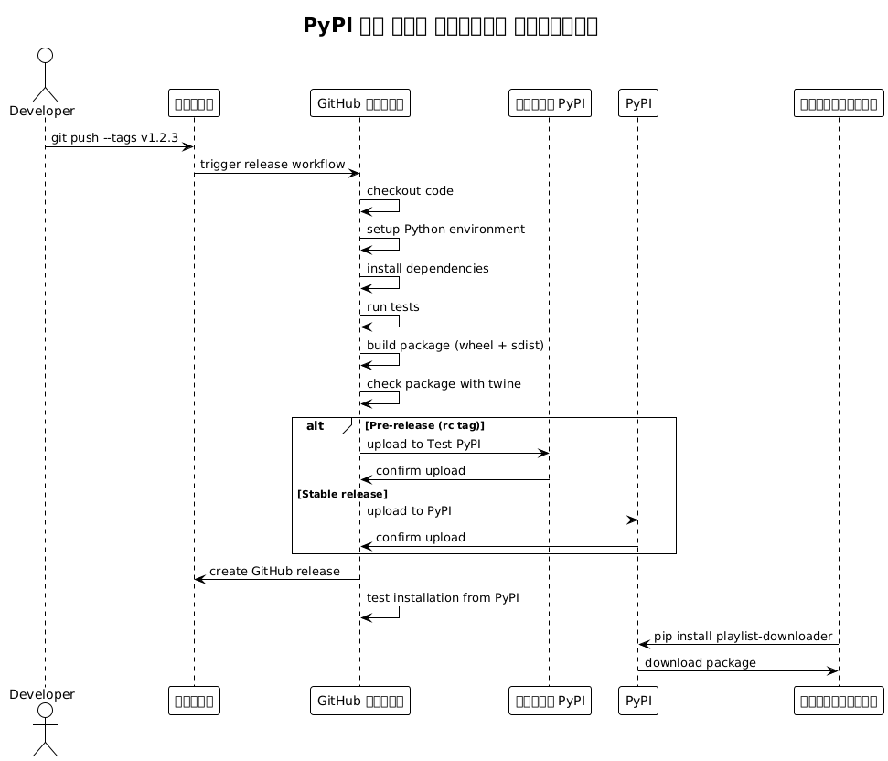
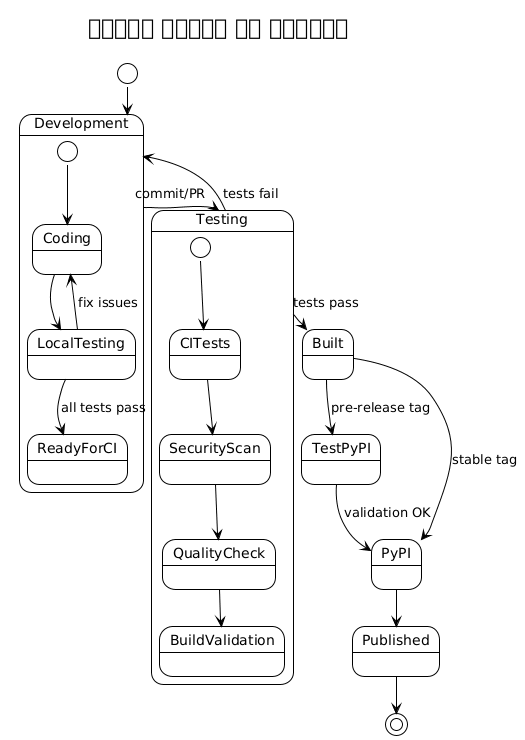
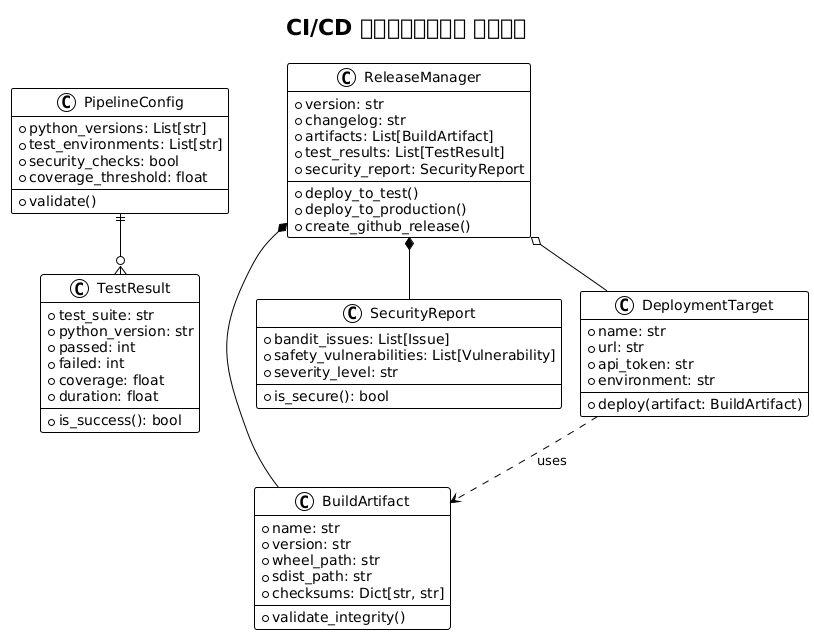

भाग 2 : औद्योगिक बनाना और सुरक्षित करना एक उन्नत Python CI/CD पाइपलाइन
Publié le 18 July 2025
- परिचय
- CI/CD पाइपलाइन की वास्तुकला
- प्रोजेक्ट संरचना
- pyproject.toml के साथ पैकेज कॉन्फ़िगरेशन
- CI/CD वर्कफ़्लो - परीक्षण और गुणवत्ता
- रिलीज़ और डिप्लॉयमेंट वर्कफ़्लो
- आर्किटेक्चर डायग्राम
- पाइपलाइन की वस्तुएँ और मॉडल
- सिक्रेट्स की कॉन्फ़िगरेशन
- स्थानीय विकास स्क्रिप्ट
- अच्छी प्रथाएँ और सिफारिशें
- मॉनिटरिंग और ऑब्ज़र्वेबिलिटी
- निष्कर्ष
- अतिरिक्त संसाधन
परिचय
इस श्रृंखला के पहले भाग में, हमने एक सरल लेकिन प्रभावी CI/CD पाइपलाइन बनाई जो Python पैकेज के परीक्षण और PyPI पर प्रकाशन को स्वचालित करती है।
अब इस पाइपलाइन को पेशेवर बनाने का समय है। इस दूसरे भाग में, हम करेंगे :
-
आधुनिक pyproject.toml मानक की ओर प्रवास करें,
-
गुणवत्ता और सुरक्षा उपकरण जोड़ें (Black, Mypy, Bandit, Safety)
-
बहु‑संस्करण परीक्षण सेट करें,
-
Test PyPI के माध्यम से क्रमिक तैनाती एकीकृत करें,
-
संस्करण को स्वचालित करें और पाइपलाइन निगरानी में सुधार करें।
एक कार्यात्मक पाइपलाइन से एक पेशेवर CI/CD बुनियादी ढांचे में संक्रमण के लिए खुद को तैयार करें।
एक पाइथन एप्लिकेशन को PyPI पर तैनात करने के लिए एक मजबूत CI/CD पाइपलाइन की आवश्यकता होती है जो टेस्ट, बिल्ड और पैकेज प्रकाशन को स्वचालित करती है। इस लेख में GitHub Actions का उपयोग करके एक CLI Python एप्लिकेशन के लिए एक पूर्ण पाइपलाइन सेट अप करने की प्रक्रिया का विस्तृत विवरण दिया गया है, आधुनिक Python इकोसिस्टम की सर्वोत्तम प्रथाओं पर आधारित।
CI/CD पाइपलाइन की वास्तुकला
वह पाइपलाइन जिसे हम निर्माण करने जा रहे हैं, कई चरणों की दृष्टिकोण का पालन करती है :
Failed to generate image: PlantUML preprocessing failed: [From <input> (line 18) ]
@startuml
...
... ( skipping 138 lines )
...
skinparam UseCaseStereoType {
FontColor black
FontName Verdana
}
title पाइपलाइन CI/CD Python PyPI की ओर
skinparam backgroundColor #f8f9fa
skinparam componentStyle rectangle
rectangle "डेवलपर" as dev
rectangle "गिटहब रिपॉजिटरी" as repo {
rectangle ".github/कार्यप्रवाह/" as workflows
rectangle "टेस्ट्स/" as tests
rectangle "setup.py / pyproject.toml" as setup
rectangle "requirements.txt" as req
}
rectangle "गिटहब एक्शंस" as actions {
rectangle "टेस्ट रनर" as test_runner
rectangle "### Gradle एकीकरण
JBake को JBake Gradle प्लगइन का उपयोग करके या JBake CLI को सीधे बुलाकर Gradle बिल्ड में एकीकृत किया जा सकता है:
^^^^^
Syntax Error? (Assumed diagram type: activity)
@startuml
!theme plain
title पाइपलाइन CI/CD Python PyPI की ओर
skinparam backgroundColor #f8f9fa
skinparam componentStyle rectangle
rectangle "डेवलपर" as dev
rectangle "गिटहब रिपॉजिटरी" as repo {
rectangle ".github/कार्यप्रवाह/" as workflows
rectangle "टेस्ट्स/" as tests
rectangle "setup.py / pyproject.toml" as setup
rectangle "requirements.txt" as req
}
rectangle "गिटहब एक्शंस" as actions {
rectangle "टेस्ट रनर" as test_runner
rectangle "### Gradle एकीकरण
JBake को JBake Gradle प्लगइन का उपयोग करके या JBake CLI को सीधे बुलाकर Gradle बिल्ड में एकीकृत किया जा सकता है:
```kotlin
tasks.register<JavaExec>("bake") {
mainClass.set("org.jbake.launcher.Main")
classpath = configurations["jbake"]
args = listOf(projectDir.absolutePath, "$buildDir/jbake")
}" as build
rectangle "सुरक्षा स्कैन" as security
rectangle "गुणवत्ता जाँच" as quality
}
rectangle "PyPI" as pypi {
rectangle "टेस्ट PyPI" as test_pypi
rectangle "उत्पादन PyPI" as prod_pypi
}
rectangle "उपयोगकर्ता" as users
dev --> repo : push/PR
repo --> actions : trigger workflow
actions --> test_runner : run tests
actions --> security : security checks
actions --> quality : code quality
actions --> build : build package
build --> test_pypi : deploy (pre-release)
build --> prod_pypi : deploy (release)
prod_pypi --> users : install package
@enduml
प्रोजेक्ट संरचना
वितरण के लिए तैयार Python CLI एप्लिकेशन को एक मानकीकृत संरचना का पालन करना चाहिए :
playlist-downloader/
├── .github/
│ └── workflows/
│ ├── ci.yml
│ ├── release.yml
│ └── security.yml
├── src/
│ └── playlist_downloader/
│ ├── __init__.py
│ ├── cli.py
│ ├── core/
│ └── adapters/
├── tests/
│ ├── unit/
│ ├── integration/
│ └── conftest.py
├── docs/
├── pyproject.toml
├── requirements.txt
├── requirements-dev.txt
├── MANIFEST.in
├── README.md
├── LICENSE
└── CHANGELOG.mdpyproject.toml के साथ पैकेज कॉन्फ़िगरेशन
फ़ाइल`pyproject.toml`यह Python पैकेज को कॉन्फ़िगर करने का आधुनिक मानक है :
[build-system]
requires = ["setuptools>=45", "wheel", "setuptools_scm>=6.2"]
build-backend = "setuptools.build_meta"
[project]
name = "playlist-downloader"
authors = [
{name = "Christophe Hérolivier", email = "cheroliv@example.com"},
]
description = "CLI tool for YouTube playlist management"
readme = "README.md"
requires-python = ">=3.8"
keywords = ["youtube", "playlist", "cli", "downloader"]
license = {text = "MIT"}
classifiers = [
"Development Status :: 4 - Beta",
"Environment :: Console",
"Intended Audience :: End Users/Desktop",
"License :: OSI Approved :: MIT License",
"Operating System :: OS Independent",
"Programming Language :: Python :: 3",
"Programming Language :: Python :: 3.8",
"Programming Language :: Python :: 3.9",
"Programming Language :: Python :: 3.10",
"Programming Language :: Python :: 3.11",
"Topic :: Multimedia :: Sound/Audio",
"Topic :: Utilities",
]
dependencies = [
"typer>=0.9.0",
"yt-dlp>=2023.7.6",
"google-api-python-client>=2.0.0",
"google-auth-oauthlib>=1.0.0",
"pyyaml>=6.0",
"rich>=13.0.0",
]
dynamic = ["version"]
[project.optional-dependencies]
dev = [
"pytest>=7.0.0",
"pytest-cov>=4.0.0",
"pytest-mock>=3.10.0",
"black>=23.0.0",
"flake8>=6.0.0",
"mypy>=1.0.0",
"pre-commit>=3.0.0",
"tox>=4.0.0",
]
test = [
"pytest>=7.0.0",
"pytest-cov>=4.0.0",
"pytest-mock>=3.10.0",
]
[project.urls]
Homepage = "https://github.com/cheroliv/playlist-downloader"
Documentation = "https://github.com/cheroliv/playlist-downloader#readme"
Repository = "https://github.com/cheroliv/playlist-downloader.git"
"Bug Tracker" = "https://github.com/cheroliv/playlist-downloader/issues"
[project.scripts]
playlist-downloader = "playlist_downloader.cli:main"
[tool.setuptools_scm]
write_to = "src/playlist_downloader/_version.py"
[tool.setuptools.packages.find]
where = ["src"]
[tool.pytest.ini_options]
testpaths = ["tests"]
python_files = ["test_*.py"]
python_classes = ["Test*"]
python_functions = ["test_*"]
addopts = [
"--cov=src/playlist_downloader",
"--cov-report=html",
"--cov-report=term-missing",
"--cov-fail-under=85",
]
[tool.black]
line-length = 88
target-version = ['py38']
include = '\.pyi?$'
extend-exclude = '''
/(
\.eggs
| \.git
| \.hg
| \.mypy_cache
| \.tox
| \.venv
| _build
| buck-out
| build
| dist
)/
'''
[tool.mypy]
python_version = "3.8"
warn_return_any = true
warn_unused_configs = true
disallow_untyped_defs = true
disallow_incomplete_defs = true
check_untyped_defs = true
disallow_untyped_decorators = true
no_implicit_optional = true
warn_redundant_casts = true
warn_unused_ignores = true
warn_no_return = true
warn_unreachable = true
strict_equality = true
[[tool.mypy.overrides]]
module = [
"yt_dlp.*",
"googleapiclient.*",
"google_auth_oauthlib.*",
]
ignore_missing_imports = trueCI/CD वर्कफ़्लो - परीक्षण और गुणवत्ता
मुख्य कार्यप्रवाह (ci.yml) कई Python संस्करणों पर टेस्ट चलाता है :
name: CI
on:
push:
branches: [ main, develop ]
pull_request:
branches: [ main ]
jobs:
test:
runs-on: ubuntu-latest
strategy:
matrix:
python-version: ["3.8", "3.9", "3.10", "3.11"]
steps:
- uses: actions/checkout@v4
with:
fetch-depth: 0
- name: Set up Python ${{ matrix.python-version }}
uses: actions/setup-python@v4
with:
python-version: ${{ matrix.python-version }}
- name: Cache dependencies
uses: actions/cache@v3
with:
path: |
~/.cache/pip
~/.cache/pre-commit
key: ${{ runner.os }}-pip-${{ hashFiles('**/requirements*.txt') }}
restore-keys: |
${{ runner.os }}-pip-
- name: Install dependencies
run: |
python -m pip install --upgrade pip
pip install -e ".[dev]"
- name: Lint with flake8
run: |
flake8 src tests --count --select=E9,F63,F7,F82 --show-source --statistics
flake8 src tests --count --exit-zero --max-complexity=10 --max-line-length=88 --statistics
- name: Check code formatting with Black
run: black --check src tests
- name: Type checking with mypy
run: mypy src
- name: Run tests with pytest
run: |
pytest tests/ -v --cov=src/playlist_downloader \
--cov-report=xml --cov-report=term-missing
- name: Upload coverage to Codecov
uses: codecov/codecov-action@v3
if: matrix.python-version == '3.11'
with:
file: ./coverage.xml
flags: unittests
name: codecov-umbrella
security:
runs-on: ubuntu-latest
steps:
- uses: actions/checkout@v4
- name: Set up Python
uses: actions/setup-python@v4
with:
python-version: "3.11"
- name: Install dependencies
run: |
python -m pip install --upgrade pip
pip install bandit[toml] safety
- name: Run security checks with bandit
run: bandit -r src/ -f json -o bandit-report.json
- name: Check dependencies with safety
run: safety check --json --output safety-report.json
- name: Upload security reports
uses: actions/upload-artifact@v3
if: always()
with:
name: security-reports
path: |
bandit-report.json
safety-report.json
build:
needs: [test, security]
runs-on: ubuntu-latest
steps:
- uses: actions/checkout@v4
with:
fetch-depth: 0
- name: Set up Python
uses: actions/setup-python@v4
with:
python-version: "3.11"
- name: Install build dependencies
run: |
python -m pip install --upgrade pip
pip install build twine
- name: Build package
run: python -m build
- name: Check package with twine
run: twine check dist/*
- name: Upload build artifacts
uses: actions/upload-artifact@v3
with:
name: dist
path: dist/रिलीज़ और डिप्लॉयमेंट वर्कफ़्लो
रिलीज़ वर्कफ़्लो (release.yml) पाइपीआई पर स्वचालित प्रकाशन प्रबंधित करता है:
name: Release
on:
push:
tags:
- 'v*.*.*'
workflow_dispatch:
inputs:
environment:
description: 'Deployment environment'
required: true
default: 'test'
type: choice
options:
- test
- production
env:
PYTHON_VERSION: "3.11"
jobs:
release:
runs-on: ubuntu-latest
environment:
name: ${{ github.event.inputs.environment || (startsWith(github.ref, 'refs/tags/') && 'production' || 'test') }}
steps:
- uses: actions/checkout@v4
with:
fetch-depth: 0
- name: Set up Python
uses: actions/setup-python@v4
with:
python-version: ${{ env.PYTHON_VERSION }}
- name: Install dependencies
run: |
python -m pip install --upgrade pip
pip install build twine
- name: Build package
run: python -m build
- name: Check package
run: twine check dist/*
- name: Publish to Test PyPI
if: github.event.inputs.environment == 'test' || (startsWith(github.ref, 'refs/tags/') && contains(github.ref, 'rc'))
env:
TWINE_USERNAME: __token__
TWINE_PASSWORD: ${{ secrets.TEST_PYPI_API_TOKEN }}
run: |
twine upload --repository testpypi dist/*
- name: Publish to PyPI
if: github.event.inputs.environment == 'production' || (startsWith(github.ref, 'refs/tags/') && !contains(github.ref, 'rc'))
env:
TWINE_USERNAME: __token__
TWINE_PASSWORD: ${{ secrets.PYPI_API_TOKEN }}
run: |
twine upload dist/*
- name: Create GitHub Release
if: startsWith(github.ref, 'refs/tags/')
uses: actions/create-release@v1
env:
GITHUB_TOKEN: ${{ secrets.GITHUB_TOKEN }}
with:
tag_name: ${{ github.ref }}
release_name: Release ${{ github.ref }}
draft: false
prerelease: ${{ contains(github.ref, 'rc') }}
post-release:
needs: release
runs-on: ubuntu-latest
if: startsWith(github.ref, 'refs/tags/')
steps:
- uses: actions/checkout@v4
- name: Set up Python
uses: actions/setup-python@v4
with:
python-version: ${{ env.PYTHON_VERSION }}
- name: Test installation from PyPI
run: |
sleep 60 # Attendre la propagation sur PyPI
pip install playlist-downloader
playlist-downloader --version
- name: Update documentation
run: |
# Script pour mettre à jour la documentation
echo "Documentation updated for version ${GITHUB_REF#refs/tags/}"आर्किटेक्चर डायग्राम
सीक्वेंस आरेख - रिलीज़ प्रक्रिया

स्थिति आरेख - पैकेज जीवन चक्र

डिप्लॉयमेंट आरेख - CI/CD इन्फ्रास्ट्रक्चर
Failed to generate image: PlantUML preprocessing failed: [From <input> (line 16) ]
@startuml
...
... ( skipping 136 lines )
...
BorderColor black
}
skinparam UseCaseStereoType {
FontColor black
FontName Verdana
}
title डिप्लॉयमेंट इन्फ्रास्ट्रक्चर
node "GitHub" {
component "रीपॉज़िटरी" as repo
component "एक्शन रनर" as runner
component "रहस्य स्टोर" as secrets
}
node "PyPI इंफ़्रास्ट्रक्चर" {
component "PyPI" as pypi
component "टेस्ट PyPI" as testpypi
database "पैकेज सूचक" as index
}
node "### JBake क्या है?
^^^^^
Syntax Error? (Assumed diagram type: component)
@startuml
!theme plain
title डिप्लॉयमेंट इन्फ्रास्ट्रक्चर
node "GitHub" {
component "रीपॉज़िटरी" as repo
component "एक्शन रनर" as runner
component "रहस्य स्टोर" as secrets
}
node "PyPI इंफ़्रास्ट्रक्चर" {
component "PyPI" as pypi
component "टेस्ट PyPI" as testpypi
database "पैकेज सूचक" as index
}
node "### JBake क्या है?
JBake एक Java-आधारित, ओपन सोर्स, स्थिर साइट/ब्लॉग जनरेटर है जो डेवलपर्स के लिए है।" {
component "Git क्लाइंट" as git
component "Python पर्यावरण" as python
component "IDE" as ide
}
node "उपयोगकर्ता वातावरण" {
component "पिप" as pip_client
component "पायथन रनटाइम" as py_runtime
}
git --> repo : push code/tags
repo --> runner : trigger workflows
runner --> secrets : read API tokens
runner --> testpypi : upload pre-release
runner --> pypi : upload release
pypi --> index : store package
pip_client --> pypi : download package
py_runtime <-- pip_client : install package
@enduml
पाइपलाइन की वस्तुएँ और मॉडल
क्लास आरेख - CI/CD मॉडल

सिक्रेट्स की कॉन्फ़िगरेशन
पाइपलाइन काम करने के लिए, आपको GitHub में निम्नलिखित सीक्रेट्स कॉन्फ़िगर करने होंगे :
GitHub Actions के रहस्य
# Dans Settings > Secrets and variables > Actions
# Token PyPI pour la production
PYPI_API_TOKEN=pypi-...
# Token Test PyPI pour les pré-releases
TEST_PYPI_API_TOKEN=pypi-...
# Token GitHub pour créer les releases
GITHUB_TOKEN=(automatiquement fourni)
# Token Codecov (optionnel)
CODECOV_TOKEN=...PyPI टोकन जनरेशन
# 1. Créer un compte sur PyPI et Test PyPI
# 2. Aller dans Account Settings > API tokens
# 3. Créer un token avec scope "Entire account" ou spécifique au projet
# 4. Format du token : pypi-AgEIcHlwaS5vcmc...स्थानीय विकास स्क्रिप्ट
विकास को आसान बनाने के लिए, उपयोगिता स्क्रिप्ट बनाएँ :
Makefile
.PHONY: install test lint format security build clean release-test release-prod
install:
pip install -e ".[dev]"
test:
pytest tests/ -v --cov=src/playlist_downloader
lint:
flake8 src tests
mypy src
format:
black src tests
security:
bandit -r src/
safety check
build:
python -m build
twine check dist/*
clean:
rm -rf build/ dist/ *.egg-info/
find . -type d -name __pycache__ -delete
find . -name "*.pyc" -delete
release-test: clean build
twine upload --repository testpypi dist/*
release-prod: clean build
twine upload dist/*
pre-commit: format lint test security
@echo "✅ Prêt pour commit"स्क्रिप्ट संस्करण
#!/usr/bin/env python3
"""Script pour gérer les versions du projet."""
import sys
import subprocess
from pathlib import Path
def get_current_version():
"""Récupère la version actuelle depuis git."""
try:
result = subprocess.run(
["git", "describe", "--tags", "--abbrev=0"],
capture_output=True,
text=True,
check=True
)
return result.stdout.strip()
except subprocess.CalledProcessError:
return "0.0.0"
def create_version_tag(version, message=None):
"""Crée un tag de version."""
if not version.startswith('v'):
version = f'v{version}'
tag_message = message or f"Release {version}"
subprocess.run(["git", "tag", "-a", version, "-m", tag_message], check=True)
print(f"✅ Tag {version} créé")
# Push le tag
subprocess.run(["git", "push", "origin", version], check=True)
print(f"✅ Tag {version} poussé vers origin")
if __name__ == "__main__":
if len(sys.argv) < 2:
current = get_current_version()
print(f"Version actuelle: {current}")
print("Usage: python version.py <new_version> [message]")
sys.exit(1)
new_version = sys.argv[1]
message = sys.argv[2] if len(sys.argv) > 2 else None
create_version_tag(new_version, message)अच्छी प्रथाएँ और सिफारिशें
समानार्थिक संस्करण
सेमेंटिक वर्जनिंग (SemVer) का उपयोग करें:
-
MAJOR.MINOR.PATCH(ex: 1.2.3) -
MAJOR: असंगत परिवर्तन -
MINOR: नए संगत विशेषताएँ -
`PATCH`संगत बग सुधार
ब्रांचिंग रणनीति
main ──●──●──●──●──●────●── (releases stables)
/ / /
develop ──●──●──●──●──●──●──●──●── (développement)
/ / /
feature/xxx ●──●──●──●──●──/ (fonctionnalités)टेस्ट और कवरेज
-
कोड कवरेज न्यूनतम : 85%
-
यूनिट टेस्ट व्यावसायिक तर्क के लिए
-
एडेप्टर्स के लिए एकीकरण परीक्षण
-
CLI के लिए एंड-टू-एंड परीक्षण
सुरक्षा
-
निर्भरताओं का स्वचालित स्कैन (Safety)
-
कोड का स्थैतिक विश्लेषण (Bandit)
-
कोड में कभी भी रहस्य नहीं
-
विशिष्ट PyPI टोकन का उपयोग
मॉनिटरिंग और ऑब्ज़र्वेबिलिटी
पाइपलाइन मेट्रिक्स
# .github/workflows/metrics.yml
name: Pipeline Metrics
on:
workflow_run:
workflows: ["CI", "Release"]
types: [completed]
jobs:
metrics:
runs-on: ubuntu-latest
steps:
- name: Collect metrics
run: |
echo "Pipeline: ${{ github.event.workflow_run.name }}"
echo "Status: ${{ github.event.workflow_run.conclusion }}"
echo "Duration: ${{ github.event.workflow_run.updated_at - github.event.workflow_run.created_at }}"
# Envoyer vers système de monitoringसूचनाएँ
# Ajout dans les workflows pour notifications
- name: Notify on failure
if: failure()
uses: 8398a7/action-slack@v3
with:
status: failure
text: "❌ Pipeline failed for ${{ github.repository }}"
env:
SLACK_WEBHOOK_URL: ${{ secrets.SLACK_WEBHOOK }}निष्कर्ष
यह पायथन के लिए पूर्ण CI/CD पाइपलाइन प्रदान करता है :
-
पूर्ण स्वचालन: कोड की सत्यापन से प्रकाशन तक
-
सुरक्षास्वचालित स्कैन और सुरक्षित रहस्य प्रबंधन
-
गुणवत्ता: बहु- संस्करणों के परीक्षण, लिंटिंग और कोड कवरेज
-
विश्वसनीयता: Test PyPI के माध्यम से क्रमिक तैनाती
-
ट्रेसेबिलिटी: artifacts, रिपोर्ट और releases GitHub
इन प्रथाओं को अपनाने से आपके Python CLI एप्लिकेशनों के लिए एक मजबूत और पेशेवर डिलीवरी प्रक्रिया सुनिश्चित होती है, जिससे आपके प्रोजेक्ट्स की रखरखाव और दीर्घकालिक विकास आसान हो जाता है।